| 日付 | 2021年1月31日（日） |
|---|---|
| 山域 | 丹沢 |
| メンバー | 家族（妻、長女・9歳、長男・7歳） |
| 山行形態 | 子連れ日帰り |
| アクセス | 車 |
| ルート (Map) | 山中湖交流プラザきらら (8:50) - (9:36) 登山口 - (10:15) 高指山 - (10:49) 切通峠 - (11:55) 鉄砲木ノ頭 (12:42) - (12:59) パノラマ台 - (13:35) 山中湖交流プラザきらら |
3週間振りの山登り。今回は山梨と神奈川の県境にある鉄砲木の頭に行く。
8年前に登った時は雲が多くてあまりすっきりと富士山を望めなかった。
本日は快晴予報なので前回のリベンジが果たせそうだ。
山中湖交流プラザきららの駐車場に車を停める。標高980m。
駐車料金は300円だ。
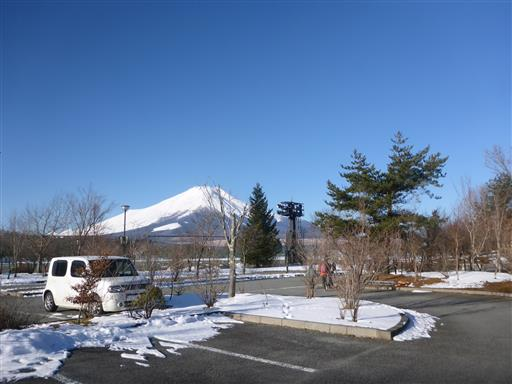
この辺りは下界でも結構雪が積もっている。
鳥の足跡が点々と付いている。
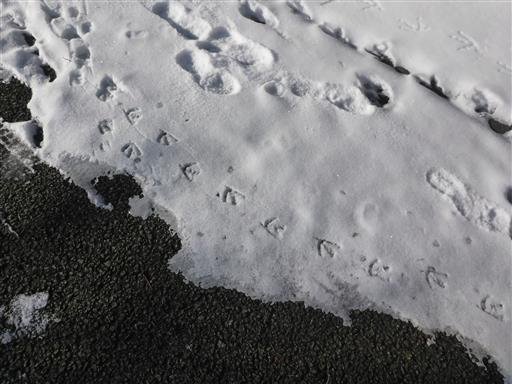
ベンチの木に付いた氷。なぜこのような形になるのだろう？
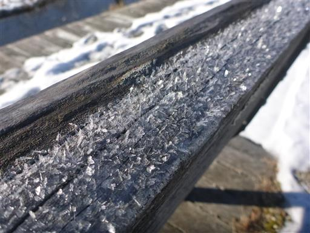
駐車場からは富士山の素晴らしい姿が望める。
前回、大野山に登った時は富士山の雪が少なかったが、
この3週間で奇麗に冠雪している。
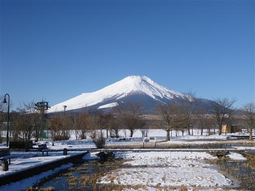
高指山に登ってぐるっと周回する予定だ。
まずは高指山登山口目指して車道を歩く。
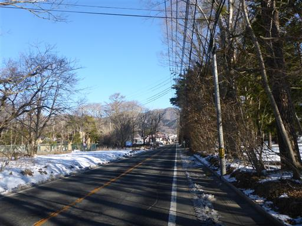
別荘地の中の道。
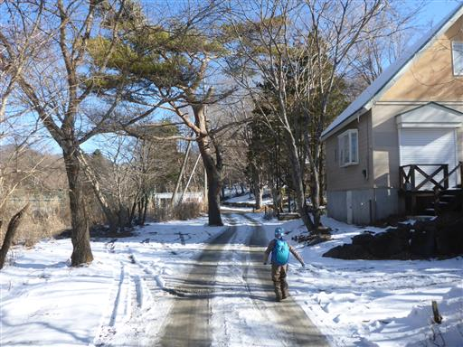
車道を歩くこと45分、登山口に到着する。
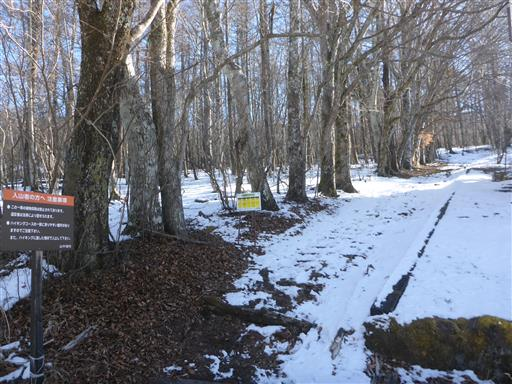
今年の冬山登りに備えて新調したスパッツを装着。
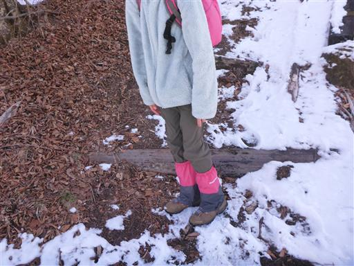
日当たりが良いところはほとんど雪が無い。
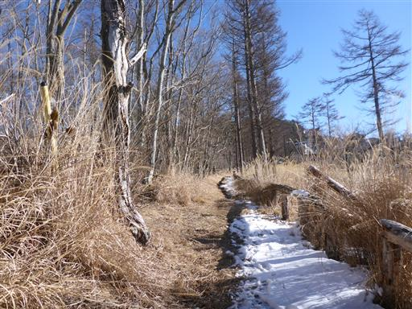
しばらく登ると美しい雪道になる。
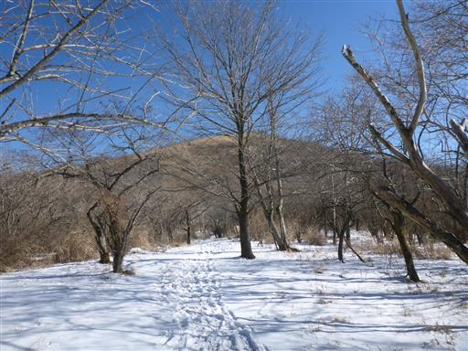
樹林帯を抜ける。
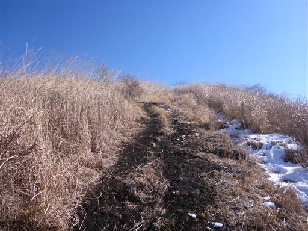
本日は見事な快晴。富士山がくっきりと見える。
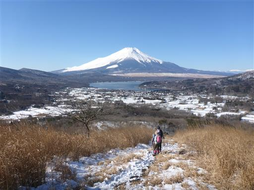
展望の良い斜面を登って行く。
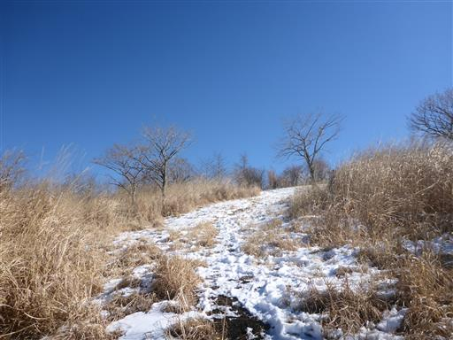
高指山山頂に到着。
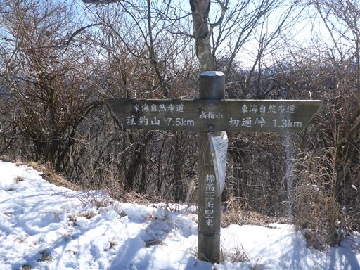
尾根道の途中という感じであまり山頂らしくない場所だ。
ベンチテーブルがあるので、辛うじてここが山頂と分かる程度だ。
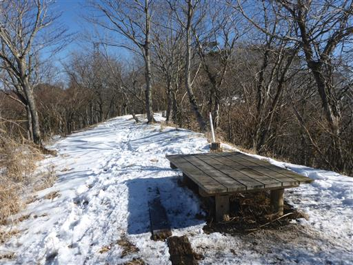
山頂から望む富士山。
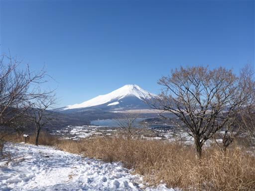
ここから甲相国境尾根を歩いて鉄砲木ノ頭を目指す。
南側斜面はあまり雪が無い。
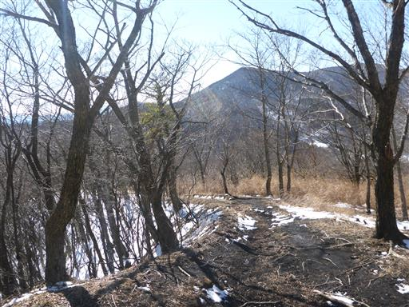
北側斜面は一面雪に覆われている。登りが雪、下りが雪無しだ。
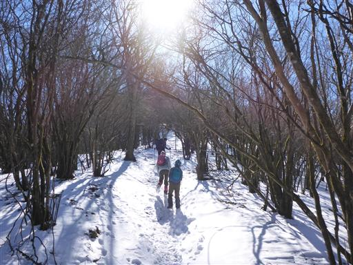
息子はまだ踏まれていない雪の中を好んで歩いている。
今日はスパッツを付けているので好きなようにやらせておく。
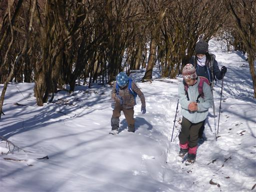
富士山は木の間からチラチラと見える程度だが、
歩いていて気持ちの良い尾根道だ。
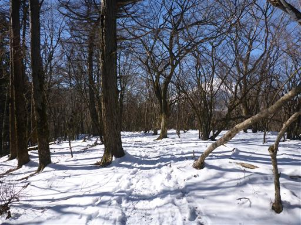
切通峠に到着。登山道の交差点だ。
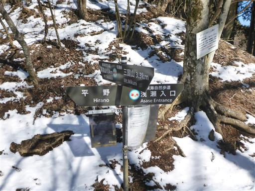
ここからしばらく登りが続く。
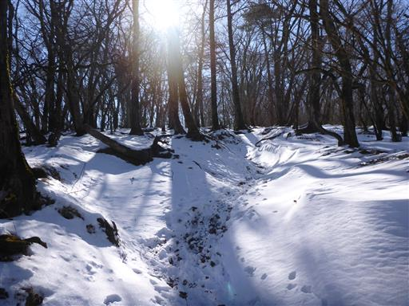
長い登りを終えると平らな道になる。何組かの登山者とすれ違う。
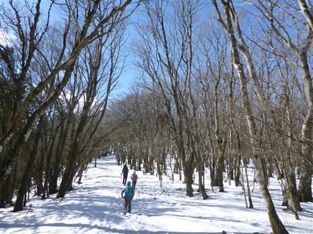
雪の中に氷を発見。水たまりだった場所なのだろうか？
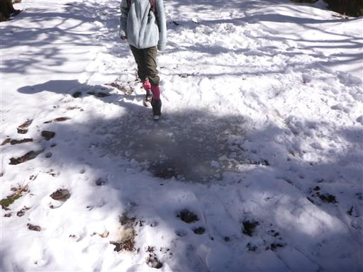
樹林帯を抜けてカヤトが見えてくる。
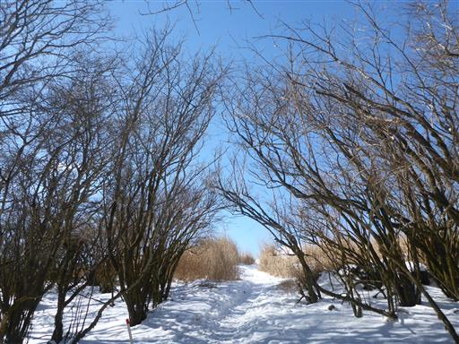
富士山が、頭からだんだんと姿を現してくる。
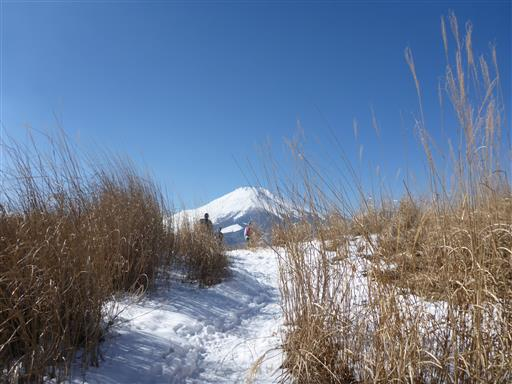
鉄砲木ノ頭に到着。標高1291m。
目の前に広がるのはもちろん見事な富士山。
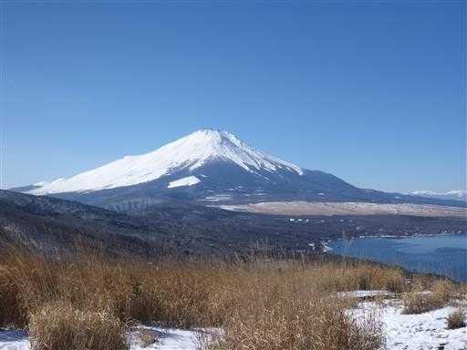
そして山中湖の向こう側には南アルプスが一直線に並んでいる。
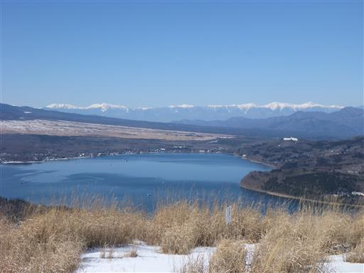
山頂は広くて、多くの登山者が訪れている。
ここで腰を下ろして昼食休憩をとることにする。
気温は低いが風がないので、あまり寒くないのが有難い。
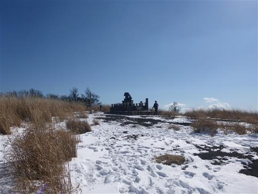
昼食をとったら下山開始。
登山道に中途半端に雪が積もっていて非常に歩きにくい。
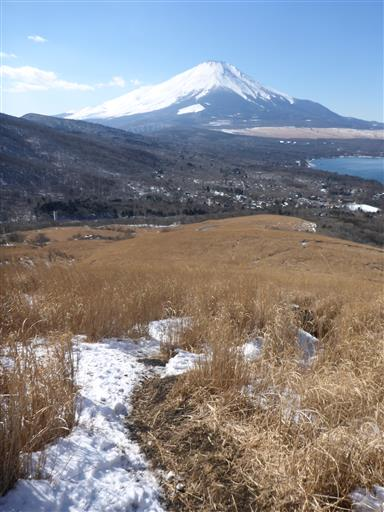
雪の急斜面を慎重に下る。
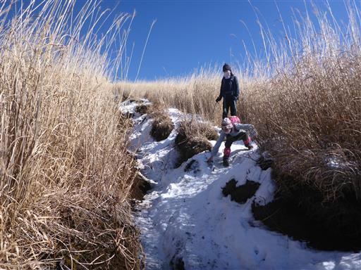
山中湖が青く光っていて非常に美しい。
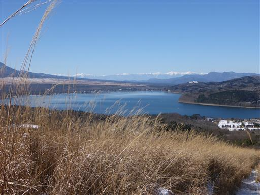
パノラマ台に到着。多くの登山者はここから鉄砲木ノ頭を往復する。
この展望台からの景色を目的に訪れている観光客も多そうだ。
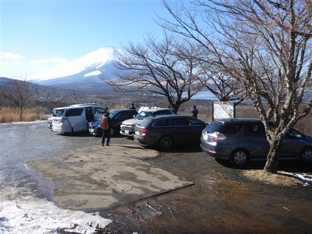
ここから下界に下りている道は人が歩いておらず、途端に静かになる。
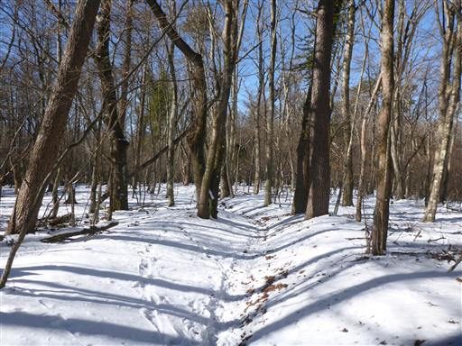
山中湖交流プラザきららに戻ってくる。背後に見えるのが鉄砲木ノ頭だ。
お手軽な山だったが、久々の雪道が楽しく、山頂からの素晴らしい展望も楽しめた登山だった。
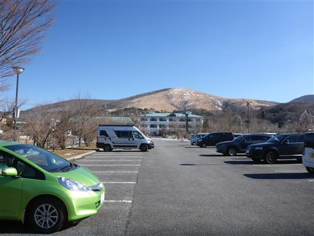